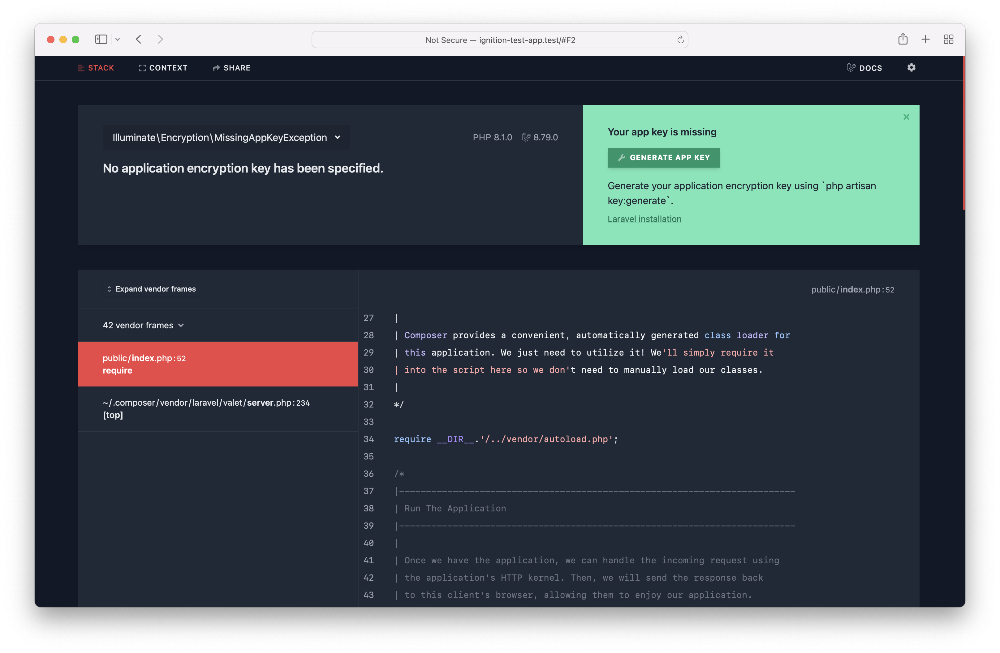
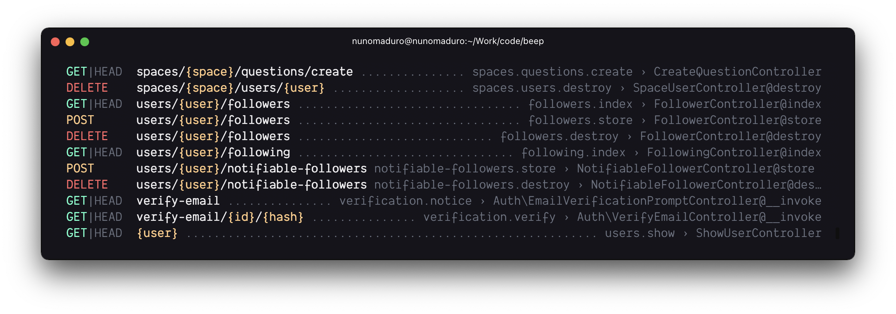
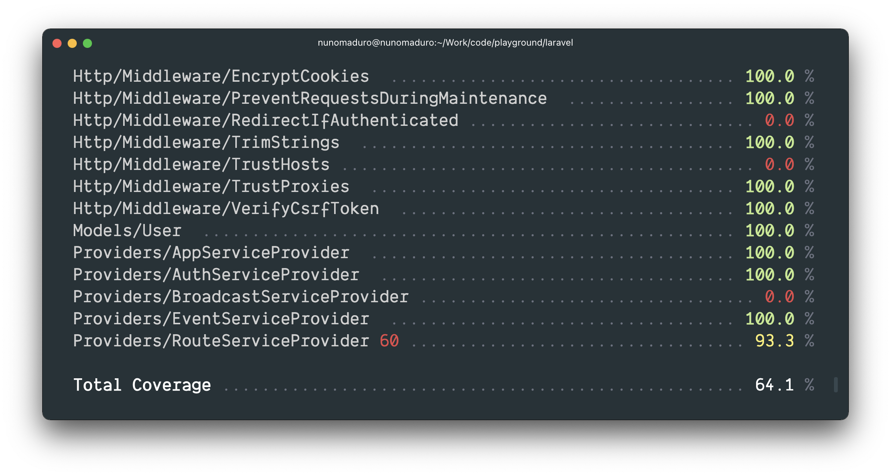
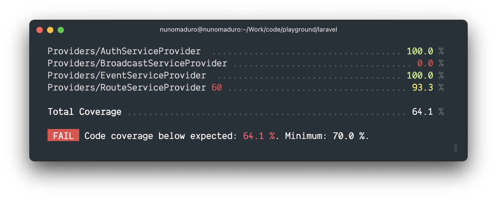
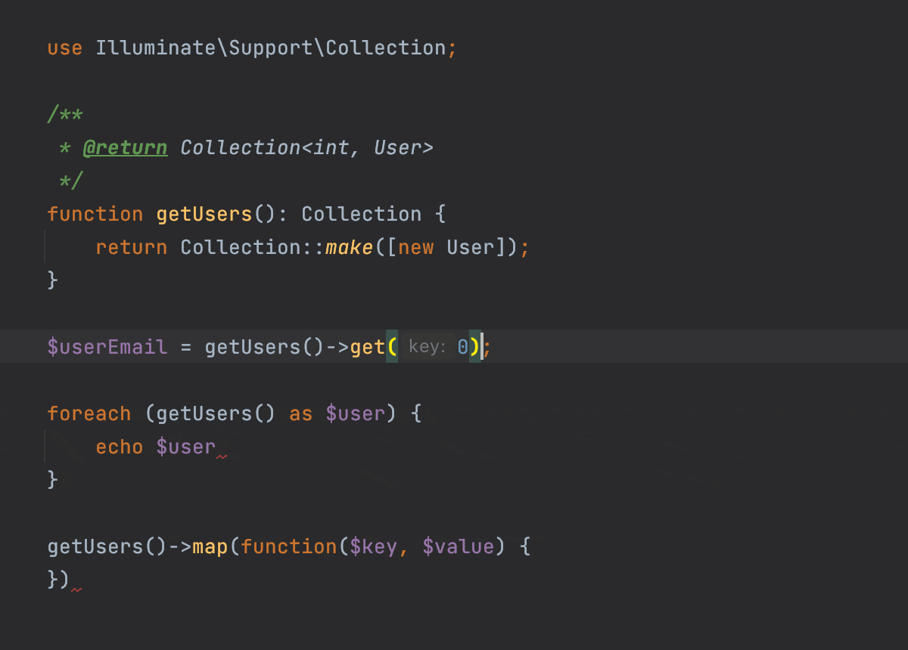

Release Notes
Versioning Scheme
Laravel and its other first-party packages follow Semantic Versioning. Major framework releases are released every year (~February), while minor and patch releases may be released as often as every week. Minor and patch releases should never contain breaking changes.
When referencing the Laravel framework or its components from your application or package, you should always use a version constraint such as ^9.0, since major releases of Laravel do include breaking changes. However, we strive to always ensure you may update to a new major release in one day or less.
Named Arguments
Named arguments are not covered by Laravel's backwards compatibility guidelines. We may choose to rename function arguments when necessary in order to improve the Laravel codebase. Therefore, using named arguments when calling Laravel methods should be done cautiously and with the understanding that the parameter names may change in the future.
Support Policy
For all Laravel releases, bug fixes are provided for 18 months and security fixes are provided for 2 years. For all additional libraries, including Lumen, only the latest release receives bug fixes. In addition, please review the database versions supported by Laravel.
| Version | PHP (*) | Release | Bug Fixes Until | Security Fixes Until |
|---|---|---|---|---|
| 6 (LTS) | 7.2 - 8.0 | September 3rd, 2019 | January 25th, 2022 | September 6th, 2022 |
| 7 | 7.2 - 8.0 | March 3rd, 2020 | October 6th, 2020 | March 3rd, 2021 |
| 8 | 7.3 - 8.1 | September 8th, 2020 | July 26th, 2022 | January 24th, 2023 |
| 9 | 8.0 - 8.1 | February 8th, 2022 | August 8th, 2023 | February 8th, 2024 |
| 10 | 8.1 | February 7th, 2023 | August 7th, 2024 | February 7th, 2025 |
(*) Supported PHP versions
Laravel 9
As you may know, Laravel transitioned to yearly releases with the release of Laravel 8. Previously, major versions were released every 6 months. This transition is intended to ease the maintenance burden on the community and challenge our development team to ship amazing, powerful new features without introducing breaking changes. Therefore, we have shipped a variety of robust features to Laravel 8 without breaking backwards compatibility, such as parallel testing support, improved Breeze starter kits, HTTP client improvements, and even new Eloquent relationship types such as "has one of many".
Therefore, this commitment to ship great new features during the current release will likely lead to future "major" releases being primarily used for "maintenance" tasks such as upgrading upstream dependencies, which can be seen in these release notes.
Laravel 9 continues the improvements made in Laravel 8.x by introducing support for Symfony 6.0 components, Symfony Mailer, Flysystem 3.0, improved route:list output, a Laravel Scout database driver, new Eloquent accessor / mutator syntax, implicit route bindings via Enums, and a variety of other bug fixes and usability improvements.
PHP 8.0
Laravel 9.x requires a minimum PHP version of 8.0.
Symfony Mailer
Symfony Mailer support was contributed by Dries Vints, James Brooks, and Julius Kiekbusch.
Previous releases of Laravel utilized the Swift Mailer library to send outgoing email. However, that library is no longer maintained and has been succeeded by Symfony Mailer.
Please review the upgrade guide to learn more about ensuring your application is compatible with Symfony Mailer.
Flysystem 3.x
Flysystem 3.x support was contributed by Dries Vints.
Laravel 9.x upgrades our upstream Flysystem dependency to Flysystem 3.x. Flysystem powers all of filesystem interactions offered by the Storage facade.
Please review the upgrade guide to learn more about ensuring your application is compatible with Flysystem 3.x.
Improved Eloquent Accessors / Mutators
Improved Eloquent accessors / mutators was contributed by Taylor Otwell.
Laravel 9.x offers a new way to define Eloquent accessors and mutators. In previous releases of Laravel, the only way to define accessors and mutators was by defining prefixed methods on your model like so:
public function getNameAttribute($value){ return strtoupper($value);} public function setNameAttribute($value){ $this->attributes['name'] = $value;}However, in Laravel 9.x you may define an accessor and mutator using a single, non-prefixed method by type-hinting a return type of Illuminate\Database\Eloquent\Casts\Attribute:
use Illuminate\Database\Eloquent\Casts\Attribute; public function name(): Attribute{ return new Attribute( get: fn ($value) => strtoupper($value), set: fn ($value) => $value, );}In addition, this new approach to defining accessors will cache object values that are returned by the attribute, just like custom cast classes:
use App\Support\Address;use Illuminate\Database\Eloquent\Casts\Attribute; public function address(): Attribute{ return new Attribute( get: fn ($value, $attributes) => new Address( $attributes['address_line_one'], $attributes['address_line_two'], ), set: fn (Address $value) => [ 'address_line_one' => $value->lineOne, 'address_line_two' => $value->lineTwo, ], );}Enum Eloquent Attribute Casting
{note} Enum casting is only available for PHP 8.1+.
Enum casting was contributed by Mohamed Said.
Eloquent now allows you to cast your attribute values to PHP "backed" Enums. To accomplish this, you may specify the attribute and enum you wish to cast in your model's $casts property array:
use App\Enums\ServerStatus; /** * The attributes that should be cast. * * @var array */protected $casts = [ 'status' => ServerStatus::class,];Once you have defined the cast on your model, the specified attribute will be automatically cast to and from an enum when you interact with the attribute:
if ($server->status == ServerStatus::provisioned) { $server->status = ServerStatus::ready; $server->save();}Implicit Route Bindings With Enums
Implicit Enum bindings was contributed by Nuno Maduro.
PHP 8.1 introduces support for Enums. Laravel 9.x introduces the ability to type-hint an Enum on your route definition and Laravel will only invoke the route if that route segment is a valid Enum value in the URI. Otherwise, an HTTP 404 response will be returned automatically. For example, given the following Enum:
enum Category: string{ case Fruits = 'fruits'; case People = 'people';}You may define a route that will only be invoked if the {category} route segment is fruits or people. Otherwise, an HTTP 404 response will be returned:
Route::get('/categories/{category}', function (Category $category) { return $category->value;});Forced Scoping Of Route Bindings
Forced scoped bindings was contributed by Claudio Dekker.
In previous releases of Laravel, you may wish to scope the second Eloquent model in a route definition such that it must be a child of the previous Eloquent model. For example, consider this route definition that retrieves a blog post by slug for a specific user:
use App\Models\Post;use App\Models\User; Route::get('/users/{user}/posts/{post:slug}', function (User $user, Post $post) { return $post;});When using a custom keyed implicit binding as a nested route parameter, Laravel will automatically scope the query to retrieve the nested model by its parent using conventions to guess the relationship name on the parent. However, this behavior was only previously supported by Laravel when a custom key was used for the child route binding.
However, in Laravel 9.x, you may now instruct Laravel to scope "child" bindings even when a custom key is not provided. To do so, you may invoke the scopeBindings method when defining your route:
use App\Models\Post;use App\Models\User; Route::get('/users/{user}/posts/{post}', function (User $user, Post $post) { return $post;})->scopeBindings();Or, you may instruct an entire group of route definitions to use scoped bindings:
Route::scopeBindings()->group(function () { Route::get('/users/{user}/posts/{post}', function (User $user, Post $post) { return $post; });});Controller Route Groups
Route group improvements were contributed by Luke Downing.
You may now use the controller method to define the common controller for all of the routes within the group. Then, when defining the routes, you only need to provide the controller method that they invoke:
use App\Http\Controllers\OrderController; Route::controller(OrderController::class)->group(function () { Route::get('/orders/{id}', 'show'); Route::post('/orders', 'store');});Full Text Indexes / Where Clauses
Full text indexes and "where" clauses were contributed by Taylor Otwell and Dries Vints.
When using MySQL or PostgreSQL, the fullText method may now be added to column definitions to generate full text indexes:
$table->text('bio')->fullText();In addition, the whereFullText and orWhereFullText methods may be used to add full text "where" clauses to a query for columns that have full text indexes. These methods will be transformed into the appropriate SQL for the underlying database system by Laravel. For example, a MATCH AGAINST clause will be generated for applications utilizing MySQL:
$users = DB::table('users') ->whereFullText('bio', 'web developer') ->get();Laravel Scout Database Engine
The Laravel Scout database engine was contributed by Taylor Otwell and Dries Vints.
If your application interacts with small to medium sized databases or has a light workload, you may now use Scout's "database" engine instead of a dedicated search service such as Algolia or MeiliSearch. The database engine will use "where like" clauses and full text indexes when filtering results from your existing database to determine the applicable search results for your query.
To learn more about the Scout database engine, consult the Scout documentation.
Rendering Inline Blade Templates
Rendering inline Blade templates was contributed by Jason Beggs. Rendering inline Blade components was contributed by Toby Zerner.
Sometimes you may need to transform a raw Blade template string into valid HTML. You may accomplish this using the render method provided by the Blade facade. The render method accepts the Blade template string and an optional array of data to provide to the template:
use Illuminate\Support\Facades\Blade; return Blade::render('Hello, {{ $name }}', ['name' => 'Julian Bashir']);Similarly, the renderComponent method may be used to render a given class component by passing the component instance to the method:
use App\View\Components\HelloComponent; return Blade::renderComponent(new HelloComponent('Julian Bashir'));Slot Name Shortcut
Slot name shortcuts were contributed by Caleb Porzio.
In previous releases of Laravel, slot names were provided using a name attribute on the x-slot tag:
<x-alert> <x-slot name="title"> Server Error </x-slot> <strong>Whoops!</strong> Something went wrong!</x-alert>However, beginning in Laravel 9.x, you may specify the slot's name using a convenient, shorter syntax:
<x-slot:title> Server Error</x-slot>Checked / Selected Blade Directives
Checked and selected Blade directives were contributed by Ash Allen and Taylor Otwell.
For convenience, you may now use the @checked directive to easily indicate if a given HTML checkbox input is "checked". This directive will echo checked if the provided condition evaluates to true:
<input type="checkbox" name="active" value="active" @checked(old('active', $user->active)) />Likewise, the @selected directive may be used to indicate if a given select option should be "selected":
<select name="version"> @foreach ($product->versions as $version) <option value="{{ $version }}" @selected(old('version') == $version)> {{ $version }} </option> @endforeach</select>Bootstrap 5 Pagination Views
Bootstrap 5 pagination views were contributed by Jared Lewis.
Laravel now includes pagination views built using Bootstrap 5. To use these views instead of the default Tailwind views, you may call the paginator's useBootstrapFive method within the boot method of your App\Providers\AppServiceProvider class:
use Illuminate\Pagination\Paginator; /** * Bootstrap any application services. * * @return void */public function boot(){ Paginator::useBootstrapFive();}Improved Validation Of Nested Array Data
Improved validation of nested array inputs was contributed by Steve Bauman.
Sometimes you may need to access the value for a given nested array element when assigning validation rules to the attribute. You may now accomplish this using the Rule::forEach method. The forEach method accepts a closure that will be invoked for each iteration of the array attribute under validation and will receive the attribute's value and explicit, fully-expanded attribute name. The closure should return an array of rules to assign to the array element:
use App\Rules\HasPermission;use Illuminate\Support\Facades\Validator;use Illuminate\Validation\Rule; $validator = Validator::make($request->all(), [ 'companies.*.id' => Rule::forEach(function ($value, $attribute) { return [ Rule::exists(Company::class, 'id'), new HasPermission('manage-company', $value), ]; }),]);Laravel Breeze API & Next.js
The Laravel Breeze API scaffolding and Next.js starter kit was contributed by Taylor Otwell and Miguel Piedrafita.
The Laravel Breeze starter kit has received an "API" scaffolding mode and complimentary Next.js frontend implementation. This starter kit scaffolding may be used to jump start your Laravel applications that are serving as a backend, Laravel Sanctum authenticated API for a JavaScript frontend.
Improved Ignition Exception Page
Ignition is developed by Spatie.
Ignition, the open source exception debug page created by Spatie, has been redesigned from the ground up. The new, improved Ignition ships with Laravel 9.x and includes light / dark themes, customizable "open in editor" functionality, and more.

Improved route:list CLI Output
Improved route:list CLI output was contributed by Nuno Maduro.
The route:list CLI output has been significantly improved for the Laravel 9.x release, offering a beautiful new experience when exploring your route definitions.

Test Coverage Using Artisan test Command
Test coverage when using the Artisan test command was contributed by Nuno Maduro.
The Artisan test command has received a new --coverage option that you may use to explore the amount of code coverage your tests are providing to your application:
php artisan test --coverageThe test coverage results will be displayed directly within the CLI output.

In addition, if you would like to specify a minimum threshold that your test coverage percentage must meet, you may use the --min option. The test suite will fail if the given minimum threshold is not met:
php artisan test --coverage --min=80.3
Soketi Echo Server
The Soketi Echo server was developed by Alex Renoki.
Although not exclusive to Laravel 9.x, Laravel has recently assisted with the documentation of Soketi, a Laravel Echo compatible Web Socket server written for Node.js. Soketi provides a great, open source alternative to Pusher and Ably for those applications that prefer to manage their own Web Socket server.
For more information on using Soketi, please consult the broadcasting documentation and Soketi documentation.
Improved Collections IDE Support
Improved collections IDE support was contributed by Nuno Maduro.
Laravel 9.x adds improved, "generic" style type definitions to the collections component, improving IDE and static analysis support. IDEs such as PHPStorm or static analysis tools such as PHPStan will now better understand Laravel collections natively.

New Helpers
Laravel 9.x introduces two new, convenient helper functions that you may use in your own application.
str
The str function returns a new Illuminate\Support\Stringable instance for the given string. This function is equivalent to the Str::of method:
$string = str('Taylor')->append(' Otwell'); // 'Taylor Otwell'If no argument is provided to the str function, the function returns an instance of Illuminate\Support\Str:
$snake = str()->snake('LaravelFramework'); // 'laravel_framework'to_route
The to_route function generates a redirect HTTP response for a given named route, providing an expressive way to redirect to named routes from your routes and controllers:
return to_route('users.show', ['user' => 1]);If necessary, you may pass the HTTP status code that should be assigned to the redirect and any additional response headers as the third and fourth arguments to the to_route method:
return to_route('users.show', ['user' => 1], 302, ['X-Framework' => 'Laravel']);